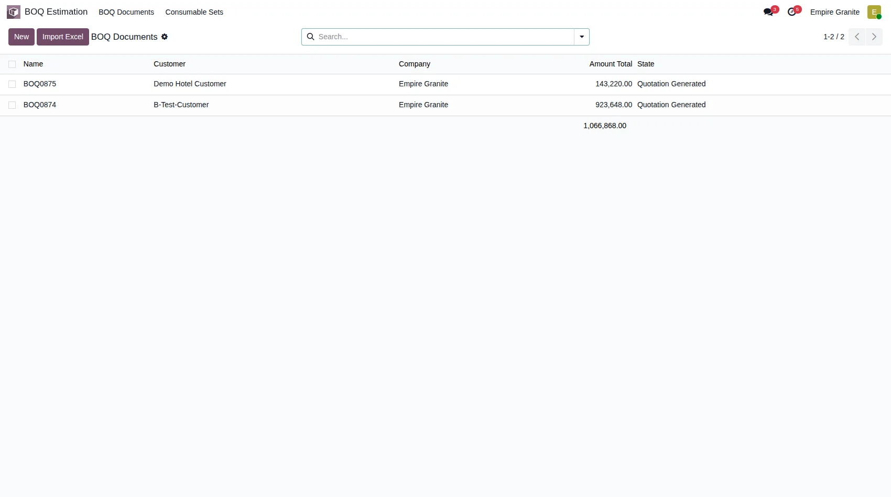
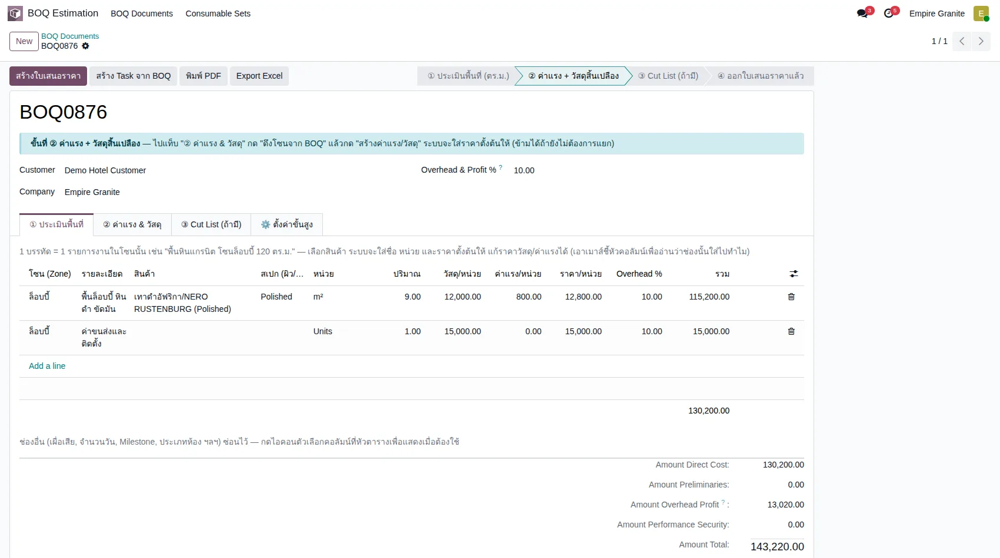
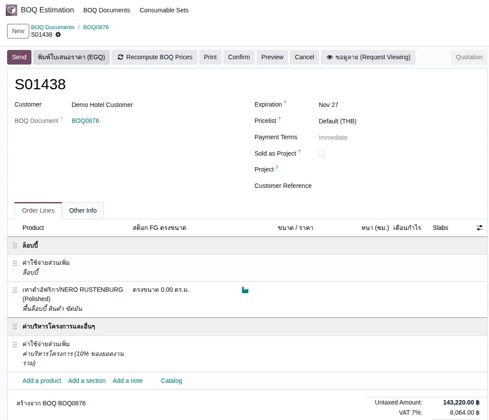
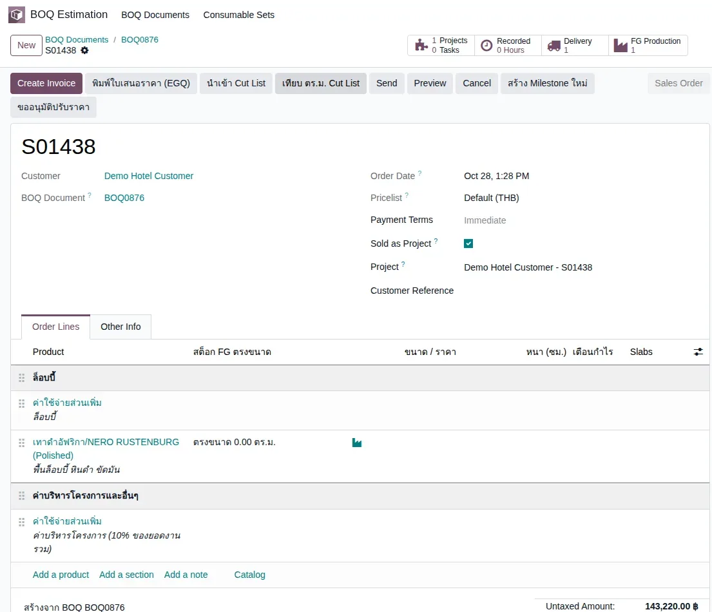
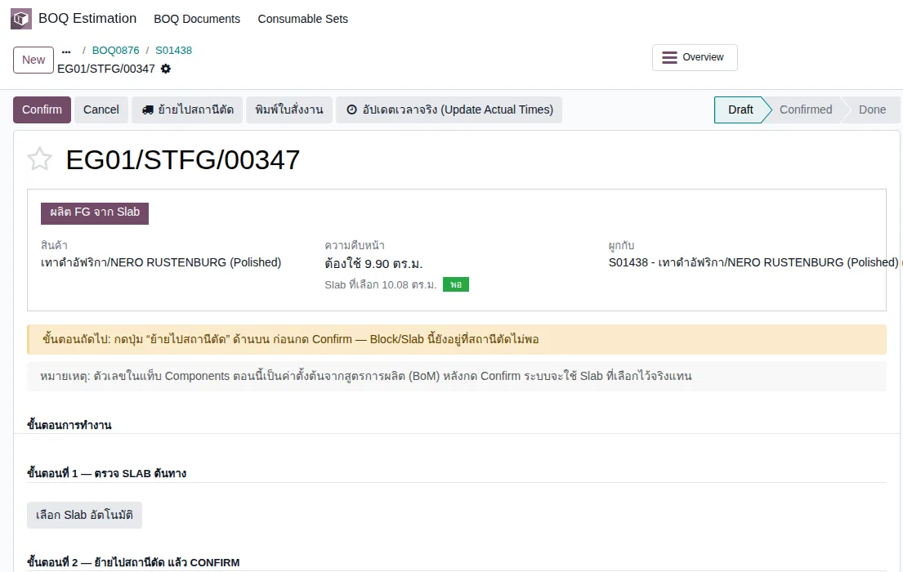
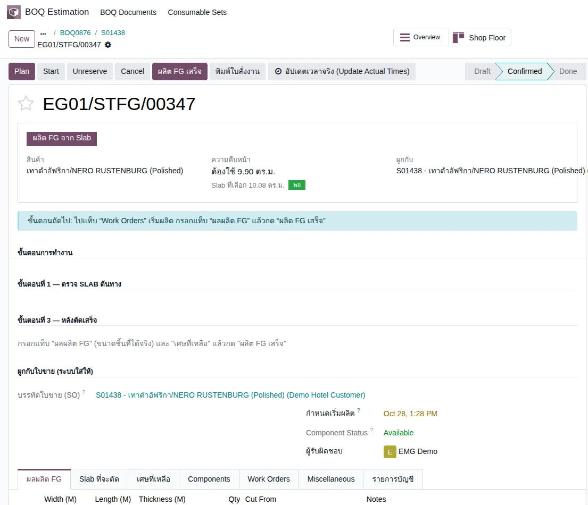
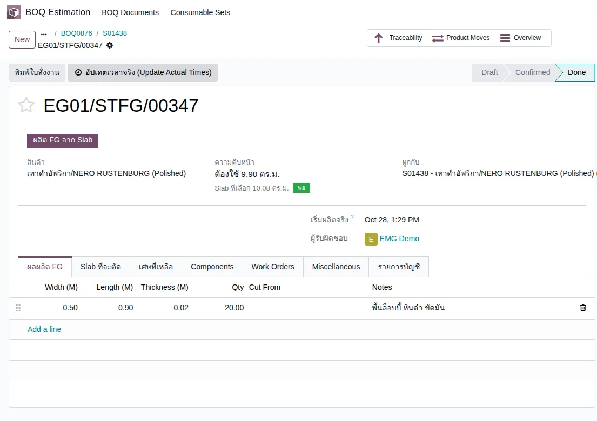
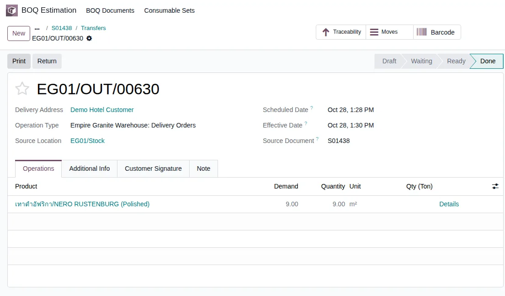
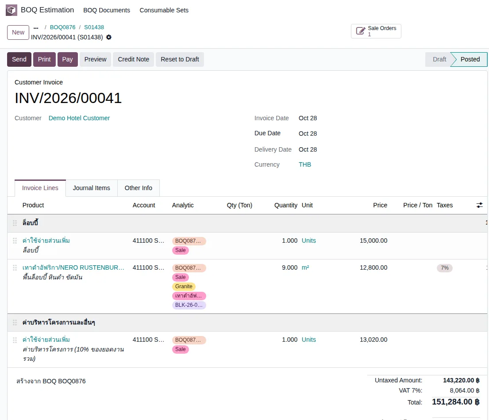
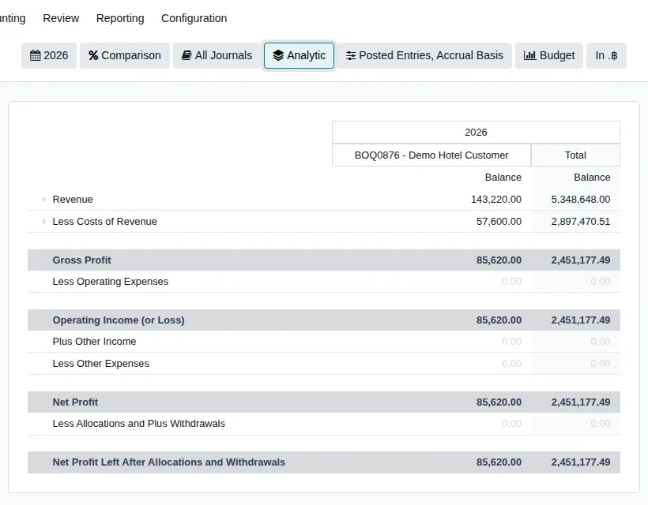

Empire Stone × Empire Granite — QA
Golden Path — BOQ: นำเข้าจาก Excel ถึงใบเสนอราคา ผลิต ส่งของ เก็บเงิน ต้นทุนและ P&L
อัปเดตล่าสุด: 28 ตุลาคม 2569 (2026-10-28) · รันจริงบน eg-tst ผ่านหน้าจอ ใช้ผู้ใช้ emgdemo บริษัท Empire Granite
เอกสารเดียวสำหรับเรื่อง BOQ: นำไฟล์ Excel เข้าเป็น BOQ ใบใหม่ ออกใบเสนอราคา เปิดสวิตช์ Project ผลิต FG ตามขนาดที่สั่ง ส่งของ ออกใบแจ้งหนี้ แล้วดู ต้นทุนที่เกิดจาก BOQ ใบนี้ และ P&L ของงานนี้ · ขอบเขต Golden Path คือเดินสำเร็จครบวงจรเท่านั้น ไม่ทดสอบกรณีกรอกผิดหรือแจ้งข้อผิดพลาด
14Test Case ทั้งหมด
4หมวด
13High Priority
1Medium Priority
0Low Priority
เอกสารนี้แทนที่ชุดเก่า 3 ฉบับ (ย้ายไป Archived แล้ว)
- Golden Path — สวิตช์ BOQ (EG-321), BOQ + Project (SY Resort) และ BOQ + Project ทำงานร่วมกัน (Self-Test) เขียนก่อนรอบปรับ 25 และ 27 ต.ค.
- ที่เปลี่ยนไปจากชุดเก่า: ไม่มี Rate Library แล้ว · นำเข้ารายการด้วย Import Excel (เฉพาะสินค้า FG) · ขนาดจาก BOQ ไปถึงใบเสนอราคาและใบสั่งผลิต · สต็อก FG นับตามขนาด · ส่งของหยิบเฉพาะ FG ขนาดตรง
- เคสที่ติดป้ายเขียว "ใหม่ 27 ต.ค." คือส่วนที่เพิ่มในรอบนี้
- 28 ต.ค. หน่วยขนาดเป็น ซม. ทั้งหมด (กว้าง ยาว หนา ใน BOQ, Import Excel, Cut List, รายชิ้นในใบเสนอราคา) ตรงกับ Cut List ของลูกค้า · ไฟล์เก่าที่หัวคอลัมน์เป็น (mm) ระบบแปลงให้ · หน้าจอฝั่งโรงงานยังเป็นเมตร
- 28 ต.ค. เลือกสินค้าใน BOQ แล้วระบบไม่เขียนชื่อสินค้าทับช่อง "รายละเอียด" (ใส่ให้เฉพาะหน่วยและราคาตั้งต้น) ดู TC-GP-BOQ-03
A. นำเข้า BOQ จาก Excel
ดาวน์โหลดเทมเพลต กรอกรายการ นำเข้า ตรวจตัวอย่าง แล้วสร้าง BOQ ใหม่ · 3 test cases
| TC ID | Scenario | Precondition | Steps | ข้อมูลตัวอย่าง | Expected Result | Priority | ภาพหน้าจอ |
|---|---|---|---|---|---|---|---|
| TC-GP-BOQ-01 | ดาวน์โหลดเทมเพลตและกรอกรายการ BOQ ทุกครั้งที่นำเข้าจะได้ BOQ ใบใหม่เสมอ ไม่ทับหรือเติมเข้า BOQ เดิม · งานหินเลือกได้เฉพาะสินค้า FG (แผ่นตัดตามขนาด หรือ FG ราคาคงที่) ไม่ใช่ Slab / Block · ไฟล์ตัวอย่างที่ใช้รันรอบนี้ดาวน์โหลดได้ที่ลิงก์ในช่องข้อมูลตัวอย่าง |
เข้าระบบเป็น Empire Granite · มีสินค้า FG หินดำ NERO RUSTENBURG (Polished) · มีลูกค้า Demo Hotel Customer |
|
บรรทัด 1: Zone ล็อบบี้ · รายการ พื้นล็อบบี้ หินดำ ขัดมัน · สินค้าหิน NERO RUSTENBURG (Polished) · กว้าง 50 ซม. · ยาว 90 ซม. · หนา 2 ซม. · จำนวน 9 ตร.ม. · ค่าแรง 800/ตร.ม. บรรทัด 2: Zone ล็อบบี้ · รายการ ค่าขนส่งและติดตั้ง · จำนวน 1 ชิ้น · ราคาวัสดุ 15,000 (ไม่เลือกสินค้า) ดาวน์โหลดไฟล์ตัวอย่าง (.xlsx) |
ได้ไฟล์ Excel ที่มีหัวตาราง Zone / รายการ / สินค้าหิน / กว้าง (ซม.) / ยาว (ซม.) / หนา (ซม.) / จำนวน / หน่วย / ราคาวัสดุ / ค่าแรง / Overhead % · 9 ตร.ม. ของแผ่น 0.5 × 0.9 ม. คือ 20 ชิ้นพอดี | High |  |
| TC-GP-BOQ-02 | อัปโหลดไฟล์และตรวจตัวอย่างก่อนสร้าง BOQ | ทำ TC-GP-BOQ-01 เสร็จแล้ว |
|
2 รายการ · Overhead ตั้งต้น 10% | หน้าตัวอย่างไม่มีแถวที่ติดข้อผิดพลาด · จำนวนรายการ 2 · วัสดุรวม 123,000.00 (108,000 ค่าแผ่น + 15,000 ค่าขนส่ง) · ค่าแรงรวม 7,200.00 · Overhead รวม 13,020.00 · รวม 143,220.00 · มีปุ่ม "สร้าง BOQ" | High |  |
| TC-GP-BOQ-03 | สร้าง BOQ แล้วตรวจรายการและยอด บรรทัดบริการ (ค่าขนส่งและติดตั้ง) ไม่ต้องเลือกสินค้าได้ · ถ้าเพิ่มบรรทัดเองในฟอร์ม BOQ (ไม่ผ่าน Excel) เลือกสินค้าแล้วระบบใส่หน่วยและราคาวัสดุตั้งต้นให้ แต่ช่องรายละเอียดต้องพิมพ์เอง ระบบไม่เขียนชื่อสินค้าทับให้ · BOQ ใหม่ขึ้นที่ขั้นตอน "② ค่าแรง + วัสดุสิ้นเปลือง" ซึ่งข้ามได้ถ้ายังไม่ต้องการแยก |
ทำ TC-GP-BOQ-02 เสร็จแล้ว |
|
BOQ0876 | ได้ BOQ0876 ลูกค้า Demo Hotel Customer · 2 บรรทัดโซนล็อบบี้: พื้น 9.00 ตร.ม. ราคา/หน่วย 12,800 (วัสดุ 12,000 + แรง 800) รวม 115,200 · ค่าขนส่งและติดตั้ง 15,000 · Direct Cost 130,200.00 · Overhead & Profit 13,020.00 · ยอดรวม 143,220.00 | High |  |
B. ใบเสนอราคาจาก BOQ
ออกใบเสนอราคา ตรวจขนาดและจำนวนชิ้นที่ติดมาจาก BOQ เปิดสวิตช์ Project แล้ว Confirm · 3 test cases
| TC ID | Scenario | Precondition | Steps | ข้อมูลตัวอย่าง | Expected Result | Priority | ภาพหน้าจอ |
|---|---|---|---|---|---|---|---|
| TC-GP-BOQ-04 | สร้างใบเสนอราคาจาก BOQ | ทำ TC-GP-BOQ-03 เสร็จแล้ว |
|
ใบเสนอราคา S01438 | เปิดใบเสนอราคา S01438 ผูกกับ BOQ0876 · มีบรรทัดค่าขนส่ง 15,000 · บรรทัดพื้น NERO RUSTENBURG (Polished) 9.00 ตร.ม. ราคา 12,800 รวม 115,200 · ท้ายใบมีบรรทัด "ค่าบริหารโครงการ (10% ของยอดงานรวม)" 13,020 · ยอดก่อน VAT 143,220.00 VAT 7% 8,064.00 รวม 151,284.00 · คอลัมน์ "สต็อก FG ตรงขนาด" ของบรรทัดพื้นขึ้น 0.00 ตร.ม. (ยังไม่มี FG ขนาดนี้ในคลัง) | High |  |
| TC-GP-BOQ-05 | ขนาดและจำนวนชิ้นจาก BOQ ติดมากับบรรทัดสินค้า แก้/เพิ่ม ใหม่ 27 ต.ค. ขนาดใน BOQ ถูกส่งต่อไปใบเสนอราคา ไม่ต้องกรอกซ้ำ |
ทำ TC-GP-BOQ-04 เสร็จแล้ว |
|
9.00 ตร.ม. ÷ พื้นที่ 1 ชิ้น 0.45 ตร.ม. = 20 ชิ้น | มีรายการชิ้นเดียว กว้าง 50.00 ซม. ยาว 90.00 ซม. จำนวน 20 ชิ้น รวม 9.00 ตร.ม. · ถ้า ตร.ม. ไม่หารด้วยพื้นที่ 1 ชิ้นลงตัว ระบบจะไม่สร้างรายชิ้นให้ (ราคาและ ตร.ม. ไม่เปลี่ยน) | High |  |
| TC-GP-BOQ-06 | เปิดสวิตช์ Sold as Project แล้ว Confirm ใบเสนอราคา สวิตช์ Project ทำให้ระบบสร้าง Project และบัญชี Analytic ของงานนี้ให้ ใช้ดู P&L รายงานนี้ใน TC-GP-BOQ-14 |
ทำ TC-GP-BOQ-05 เสร็จแล้ว |
|
Project = Demo Hotel Customer - S01438 | สถานะเป็น Sales Order · ช่อง Project เติมชื่อ "Demo Hotel Customer - S01438" · สมาร์ทปุ่มมี Projects 1 / Delivery 1 / FG Production 1 | High |  |
C. ผลิต FG ส่งของ และเก็บเงิน
ใบสั่งผลิตได้ขนาดและจำนวนจาก BOQ เลือก Slab ผลิตเสร็จ ส่งของตามขนาด ออกใบแจ้งหนี้ · 5 test cases
| TC ID | Scenario | Precondition | Steps | ข้อมูลตัวอย่าง | Expected Result | Priority | ภาพหน้าจอ |
|---|---|---|---|---|---|---|---|
| TC-GP-BOQ-07 | ใบสั่งผลิต FG ได้ขนาดและจำนวนตามที่สั่ง แก้/เพิ่ม ใหม่ 27 ต.ค. ขนาดและความหนาไปถึงใบสั่งผลิต FG |
ทำ TC-GP-BOQ-06 เสร็จแล้ว |
|
ใบสั่งผลิต EG01/STFG/00347 | ใบสั่งผลิตสถานะ Draft สินค้า NERO RUSTENBURG (Polished) จำนวน 9.00 ตร.ม. · แท็บผลผลิต FG มี 1 แถว กว้าง 0.50 ยาว 0.90 หนา 0.02 (เมตร ฝั่งโรงงาน) จำนวน 20.00 ชิ้น หมายเหตุ "พื้นล็อบบี้ หินดำ ขัดมัน" | High |  |
| TC-GP-BOQ-08 | เลือก Slab ย้ายไปสถานีตัด แล้ว Confirm ใบสั่งผลิต | ทำ TC-GP-BOQ-07 เสร็จแล้ว · มี Slab NERO RUSTENBURG (Polished) 2 ซม. ว่างในคลัง |
|
งาน 9.00 ตร.ม. + เผื่อเสีย = ต้องใช้ 9.90 ตร.ม. | การ์ดสรุปแสดง "ต้องใช้ 9.90 ตร.ม." และ "Slab ที่เลือก 10.08 ตร.ม." ป้ายเขียว "พอ" · ข้อความ "ย้ายสำเร็จ ... ย้าย 3 lot ไป Stone Production แล้ว" · สถานะเป็น Confirmed และมีปุ่ม "ผลิต FG เสร็จ" | High |   |
| TC-GP-BOQ-09 | ผลิต FG เสร็จ ได้ FG ขนาดตามสั่ง | ทำ TC-GP-BOQ-08 เสร็จแล้ว |
|
ใบสั่งผลิต EG01/STFG/00347 | ข้อความ "Complete FG Production สำเร็จ ... ผลิตสำเร็จ 9.00 หน่วย" · สถานะ Done · ได้ FG 1 Lot ชื่อ FG-EG01/STFG/00347-01 จำนวน 20 ชิ้น ขนาด 0.50 × 0.90 × 0.02 ม. รวม 9.00 ตร.ม. อยู่ที่ EG01/Stock/Stone FG | High |  |
| TC-GP-BOQ-10 | ส่งของ — ระบบหยิบเฉพาะ FG ขนาดที่สั่ง แก้/เพิ่ม ใหม่ 27 ต.ค. การส่งของจองเฉพาะ FG Lot ขนาดตรงกับที่สั่ง |
ทำ TC-GP-BOQ-09 เสร็จแล้ว |
|
ใบส่งของ EG01/OUT/00630 | Details แสดงแถวเดียว FG-EG01/STFG/00347-01 จาก EG01/Stock/Stone FG จำนวน 9.00 ตร.ม. · หลัง Validate สถานะ Done Demand 9.00 Quantity 9.00 | High |   |
| TC-GP-BOQ-11 | ออกใบแจ้งหนี้และ Confirm | ทำ TC-GP-BOQ-10 เสร็จแล้ว |
|
ใบแจ้งหนี้ INV/2026/00041 | สถานะ Posted · 3 บรรทัดตามใบขาย (ค่าขนส่ง 15,000 / พื้น 9.000 ตร.ม. 115,200 / ค่าบริหารโครงการ 13,020) · ยอดก่อน VAT 143,220.00 VAT 7% 8,064.00 รวม 151,284.00 · ทุกบรรทัดบัญชีรายได้ 411100 และ Analytic "BOQ0876 - Demo Hotel Customer" | High |  |
D. ต้นทุนที่เกิดจาก BOQ ใบนี้ และ P&L
เทียบยอดประมาณการใน BOQ กับต้นทุนจริงจากใบสั่งผลิต แล้วดู P&L ของงานนี้ผ่านรายงานมาตรฐาน · 3 test cases
| TC ID | Scenario | Precondition | Steps | ข้อมูลตัวอย่าง | Expected Result | Priority | ภาพหน้าจอ |
|---|---|---|---|---|---|---|---|
| TC-GP-BOQ-12 | ยอดใน BOQ คือยอดประมาณการ ไม่ใช่ต้นทุนจริงของโรงงาน ชื่อช่อง "Direct Cost" ใน BOQ คือ วัสดุ + ค่าแรง ที่ตั้งราคาขาย (130,200) ไม่ใช่ต้นทุนที่โรงงานจ่ายจริง ต้นทุนจริงดูที่ TC-GP-BOQ-13 · คอลัมน์ "ต้นทุน/ชิ้น (ประมาณ)" "Margin/ชิ้น (ประมาณ)" "สถานะต้นทุน" ในใบเสนอราคาเติมให้เฉพาะ FG ราคาคงที่ที่มี Cut List (เช่น เจดีย์บัว/โคม) แผ่นตัดตามขนาดอย่างงานนี้ช่องเหล่านี้ว่าง เพราะต้นทุนจริงมาจากแผ่นที่ใช้ตอนผลิต |
ทำ TC-GP-BOQ-03 และ TC-GP-BOQ-04 เสร็จแล้ว |
|
BOQ0876 / S01438 | BOQ: Amount Direct Cost 130,200.00 · Overhead & Profit 13,020.00 · Total 143,220.00 (ราคาที่เสนอลูกค้า) · ใบเสนอราคา: คอลัมน์ต้นทุน/Margin ของบรรทัดพื้นว่าง ไม่แสดงตัวเลขที่ไม่จริง | Medium | |
| TC-GP-BOQ-13 | ต้นทุนจริงที่เกิดจากใบสั่งผลิต (ค่า Slab + ค่าแรง + วัสดุสิ้นเปลือง) ค่าแรงถูกเติมให้ต้นทุน FG ไม่ต่ำกว่า 50% ของรายได้บรรทัดนั้น (กฎเจ้าของ ตั้งค่าได้ที่ system parameter stone_slab_inventory.fg_min_cost_ratio) ตัวเลข 40,370.40 จึงไม่ใช่ค่าแรงมาตรฐานต่อ ตร.ม. ล้วนๆ · ถ้าค่าแรงมาตรฐาน + วัสดุสิ้นเปลือง + ค่า Slab เกิน 50% อยู่แล้ว ระบบไม่เติมให้ |
ทำ TC-GP-BOQ-09 เสร็จแล้ว |
|
ต้นทุน FG รวม 57,600.00 = 6,400/ตร.ม. × 9 ตร.ม. = 50% ของรายได้พื้น 115,200 | 4 รายการบัญชี สถานะ Posted: ค่า Slab ที่ใช้ตัด 16,329.60 (Inventory Valuation 2 รายการ คือตัด Slab ออกและรับ FG เข้า) · FG Production Labor 40,370.40 · FG Production Consumables 900.00 · ต้นทุนรวมที่ลงเป็นต้นทุนขาย 16,329.60 + 40,370.40 + 900.00 = 57,600.00 | High |  |
| TC-GP-BOQ-14 | ดู P&L ของ BOQ ใบนี้ (กรองด้วย Analytic) ใช้รายงาน Profit and Loss มาตรฐานของ Odoo ไม่มีหน้า P&L เฉพาะ BOQ · กรองได้เพราะใบขายนี้เปิดสวิตช์ Project (ระบบตั้ง Analytic "BOQ0876 - Demo Hotel Customer" ให้) · ใบขายที่ไม่เปิดสวิตช์นี้ไม่ได้ทดสอบในเอกสารนี้ |
ทำ TC-GP-BOQ-11 และ TC-GP-BOQ-13 เสร็จแล้ว |
|
รายงานปี 2026 · Posted Entries, Accrual Basis (ค่าตั้งต้น) | คอลัมน์ BOQ0876: Revenue 143,220.00 (411100) · Costs of Revenue 57,600.00 แยกเป็น 511110 ต้นทุนหินส่ง 16,329.60 / 511120 งานแปรรูป 40,370.40 / 511130 วัสดุสิ้นเปลือง 900.00 · Gross Profit 85,620.00 (59.8% ของรายได้) · Net Profit 85,620.00 · ตัวเลขตรงกับใบแจ้งหนี้ (TC-GP-BOQ-11) และใบสั่งผลิต (TC-GP-BOQ-13) | High |   |